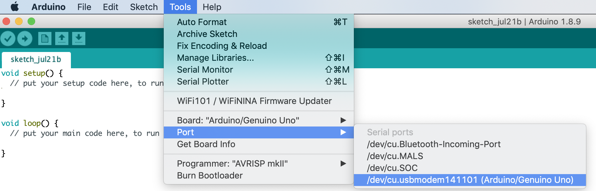
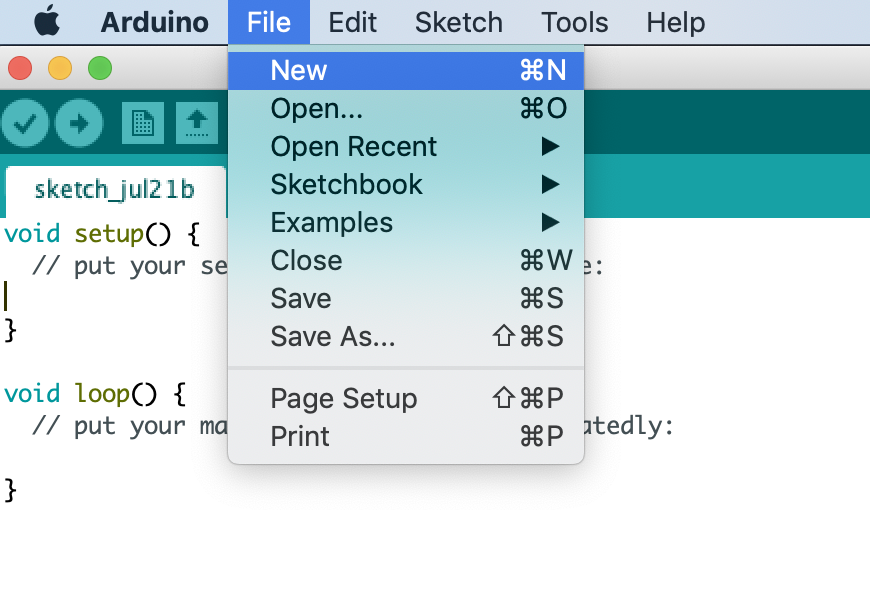

Your First Arduino Project
In one of my current projects, I used a few IR sensors, also known as Obstacle sensors. It can be great for Arduino projects, and can be bought really cheap from Amazon. we will see how we these sensors work, how the can be used, how we can test them, and possible fine tine them a little bit. so we need an Arduino UNO board, Obstacle sensor, a LED.
1. How to Connect Arduino with Your Mac
- First Connect your Arduino Board with USB with your System
- Download Arduino Software from Arduino offcial website. https://www.arduino.cc/en/Main/Software
- After Installed the software now slect your board.
- When your board has connected with system, it will be displayed in port list now slect your Port. 
- Now you are ready to start code in Arduino. 
2. Connect Obstacle sensor and Led with Arduino
What is a Obstacle sensor?
Infrared Obstacle Sensor Module has builtin IR transmitter and IR receiver that sends out IR energy and looks for reflected IR energy to detect presence of any obstacle in front of the sensor module. The module has on board potentiometer that lets user adjust detection range. The sensor has very good and stable response even in ambient light or in complete darkness.
Now connect you Obstacle sensor and Led with Arduino. Please follow the below digrame
The code is very simple, and is basically just keeps track of whether the input to pin 2 is high or low. It also tracks the state of the pin, so that it prints out a message when motion has started and stopped.
3. Paste below code in your new file
// put your setup code here, to run once:
int inputPin = 2; // choose the input pin (for Obstacle sensor)
int pirState = LOW; // we start, assuming no motion detected
int val = 0; // variable for reading the pin status
void setup() {
pinMode(13, OUTPUT); // declare LED as output
pinMode(inputPin, INPUT); // declare sensor as input
Serial.begin(9600);
}
void loop(){
val = digitalRead(inputPin); // read input value
if (val == HIGH) { // check if the input is HIGH
digitalWrite(13, HIGH); // turn LED ON
if (pirState == LOW) {
// we have just turned on
Serial.println("Motion detected!");
// We only want to print on the output change, not state
pirState = HIGH;
}
} else {
digitalWrite(13, LOW); // turn LED OFF
if (pirState == HIGH){
// we have just turned of
Serial.println("Motion ended!");
// We only want to print on the output change, not state
pirState = LOW;
}
}
}
4. Verify these code.
5. Now upload your code in Arduino and you are ready to test. So when you sensor will detect the motion a led light will on